Azim Premji University
August 2, 2026
Broad Area: Model labour market transitions in India using a panel dataset and observe differences among different social groups and across different time periods.
(Working) Question: How long do males in urban India stay unemployed, and what kind of exits from unemployment do they make?
Key Methodology: Survival Analysis
Survival analysis provides methods to study the data where the outcome variable is the time until an event occurs.
Eg: death of a cancer patient, re-employment of an unemployed worker, machine becoming unserviceable, etc.
It is powerful because it provides methods to deal with incomplete observation of time
The time taken for for the event of interest to occur is called the survival time. The event occurring is referred to as failure.
For now, we will assume that there is only one kind of failure and it can only occur once.
Survival time by the random variable \(T \geq 0\).
Censoring refers to incomplete observation of data due to random factors
Right Censoring: Attrition or study ending before failure.
Left Censoring: Subject not observed from time of origin.
Mid/Interval censoring: Combination of the above.
Hereafter, assume censoring to imply right censoring, unless specified otherwise.
\[ \delta = \begin{cases} 1 & \text{if failure} \\ 0 & \text{if censored} \\ \end{cases} \]
\[ S(t) = \mathbb{P}(T > t) \]
Gives the probability that a person survives longer than some specified time \(t\).
\(S(0) = 1\) and \(S(\infty) = 0\).
\[h(t) = \lim_{\Delta t \to 0 } \frac{\mathbb{P}(t < T \leq t + \Delta T | T \geq t)}{\Delta t}\]
Gives the instantaneous rate of failure to occur, given that the individual has survived up to time t.
Also known as the conditional failure rate.
\(h(t) \geq 0\). Has no upper bound.
The Kaplan Meier (KM) estimator is non-parametric model which estimates the survival function.
Let \(t_1 < \dots < t_k\) be an ordered set of failure times. \[ \begin{aligned} \widehat{S}(t_k) &= \prod_{j = 1}^{k} \widehat{\mathbb{P}}(T > t_j | T > t_{j-1})\\ &= \prod_{j = 1}^{k} \left(\frac{r_j - q_j}{r_j}\right) \end{aligned} \] where \(r_j\) is the number of individuals at risk of failure at \(t_j\), and \(q_j\) is the number of individuals who fail at \(t_j\).
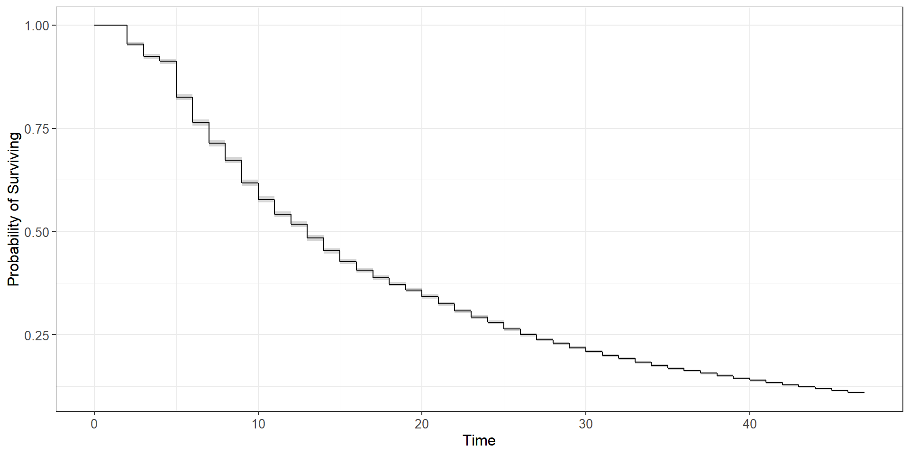
The Cox Proportional Hazard (PH) model is a semi-parametric model which estimates the hazard rate.
It is given by \[ h(t|\mathbf{X}) = h_0(t) \exp (\boldsymbol{\beta}^\mathsf{T}\mathbf{X}) \] where \(h_0 \geq 0\) is an unspecified baseline hazard function, and \(\mathbf{X}\) is vector of time-independent covariates.
Covariates can be controlled for in this model. However, the coefficients cannot be interpreted directly.
To interpret the Cox PH model, take two individuals with corresponding covariates \(\mathbf{X_i}\) and \(\mathbf{X_j}\)
The Hazard Ratio is given by: \[ \begin{align} HR &= \frac{\widehat{h}(t, \mathbf{X_i})}{\widehat{h}(t, \mathbf{X_j})}\\ &= \frac{h_0(t) \exp (\boldsymbol{\beta}^\mathsf{T} \mathbf{X_i})}{h_0(t) \exp (\boldsymbol{\beta}^\mathsf{T} \mathbf{X_j})} \\ &= \exp (\boldsymbol{\beta}^\mathsf{T} (\mathbf{X_i} - \mathbf{X_j})) \end{align} \]
The fact that the HR stays constant throughout time, due to the specification of the model, is called the Proportional Hazards(PH) assumption.
\[ \begin{align} \text{HR} &= \frac{\widehat{h}(t, \text{Gender}_i = 1)}{\widehat{h}(t, \text{Gender}_j = 0)}\\ &= \frac{h_0(t) \exp (\beta \cdot 1)}{h_0(t) \exp (\beta \cdot 0)} \\ &= \exp (\beta) \end{align} \]
Say we estimate \(\beta = -0.693\). So \(\text{HR} = \exp(-0.693) \approx 0.5\).
This means if a male and female remain unemployed up to the same point of time; the instantaneous rate of getting employed for the female is half that of a male.
Grambsch-Therneau PH Test tests the following:
Assume \(\beta(t) = \beta_0 + \theta g(t)\) where \(\theta \in \mathbb{R}\) and \(g(t)\) is a function of time. \[ \begin{align} H_0: \theta = 0 \\ H_A: \theta \neq 0 \end{align} \]
In general, if we obtain p-value \(>0.05\), we are unable to reject the null hypothesis and assume the PH assumption to hold.
\[ h(t|\mathbf{X}(t)) = h_0(t) \exp (\boldsymbol{\beta}^\mathsf{T}\mathbf{X}(t)) \] where \(h_0 \geq 0\) is an unspecified baseline hazard function, and \(\mathbf{X}(t)\) is vector of time-independent covariates.
Kannan (2025) uses linear regressions and non-parametric survival analysis (Nelson-Aalen Estimator) on CMIE-CPHS data to analyse the determinants of unemployment duration on males in Urban India. This creates a trade-off between controlling for covariates and accounting for censoring.
Menon & Nath (2025) use a Cox PH model on PLFS Urban Panel data to estimate job-finding rates. However, this panel only tracks individuals for four times in a year before replacing them.
Using survival analysis while controlling for covariates on a long panel dataset.
Employing a competing risks and a recurrent events framework.
Studying discouragement of workers as a distinct phenomenon.
Utilizing post-COVID data.
The Centre for Monitoring Indian Economy (CMIE) conducts the Consumer Pyramids Household Survey (CPHS) which is a nationally representative panel survey.
Each individual is interviewed three times a year, with each instance called a “wave”.
Records relevant indicators on employment status, income, religion, caste, education level etc.
Data from 2016-2019 and 2022-2025 shall be used, totalling 24 waves.
2016 is chosen as the starting point as the relevant employment indicators are introduced in the survey then. The sample of the survey stabilizes around late 2015.
Data from 2020 and 2021 has been excluded to prevent capturing disruptions induced by the COVId-19 pandemic.
Aggregate employment statistics on females estimated from CPHS diverge significantly from the official PLFS estimates (Abraham & Shrivastava, 2022). For this reason, in this study the data will only be restricted to male respondents.
Only data from Urban areas will be used. (Explanation soon)
CPHS captures the employment status of an individual only once in three months when they are surveyed.
However, they are asked about their income and consumption expenditures for the past 4 months. Hence, we get a monthly frequency for income data.
Kannan (2025) uses this impute monthly employment status:
Income from wages \(= 0 \implies\) Non-Employed
Income from wages \(> 0 \implies\) Employed
The prevalence of in-kind wages and delayed wages in Rural India will affect the validity of this imputation exercise. Hence, Kannan (2025) excludes rural areas from his sample, and the same shall be done in this study.
However, instead of just capturing the status as non-employed, I intend to capture it distinctly as unemployed, discouraged or out of labour force. This will require me to make some additional assumptions.
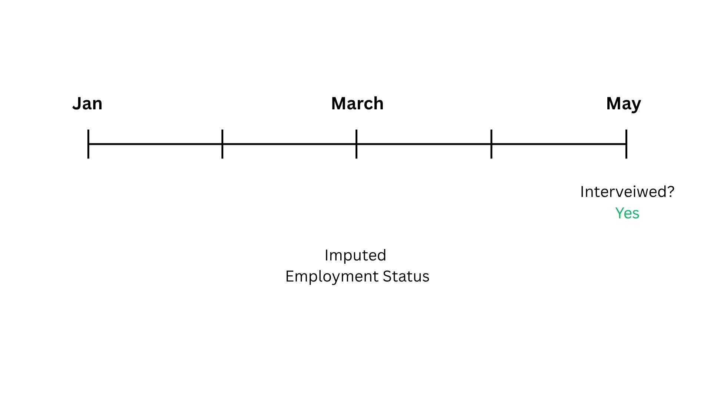
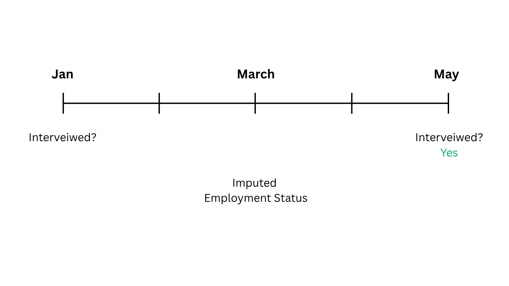
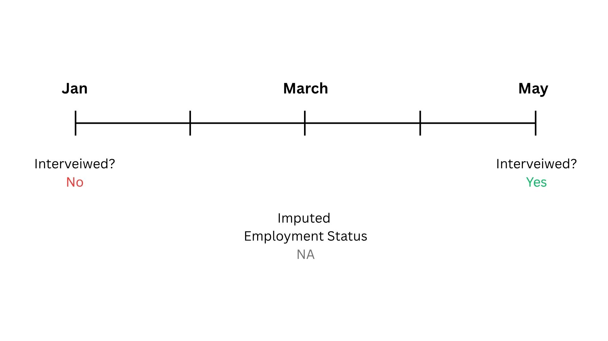
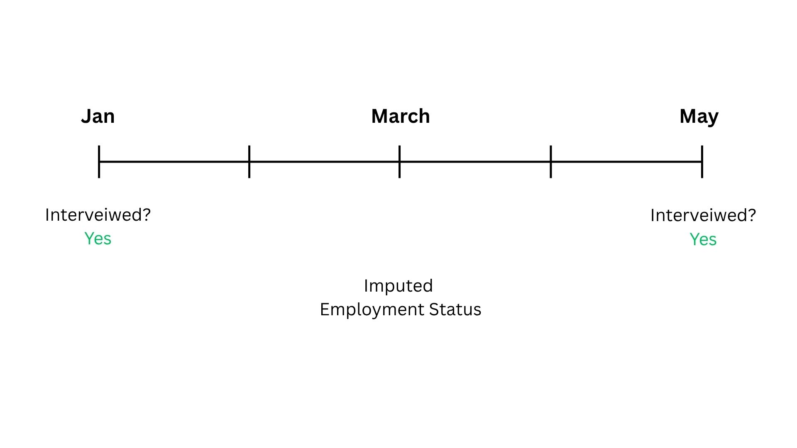
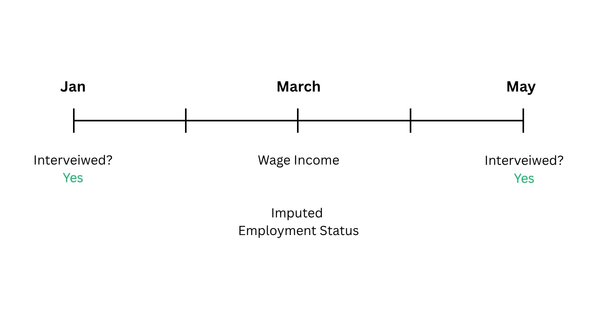
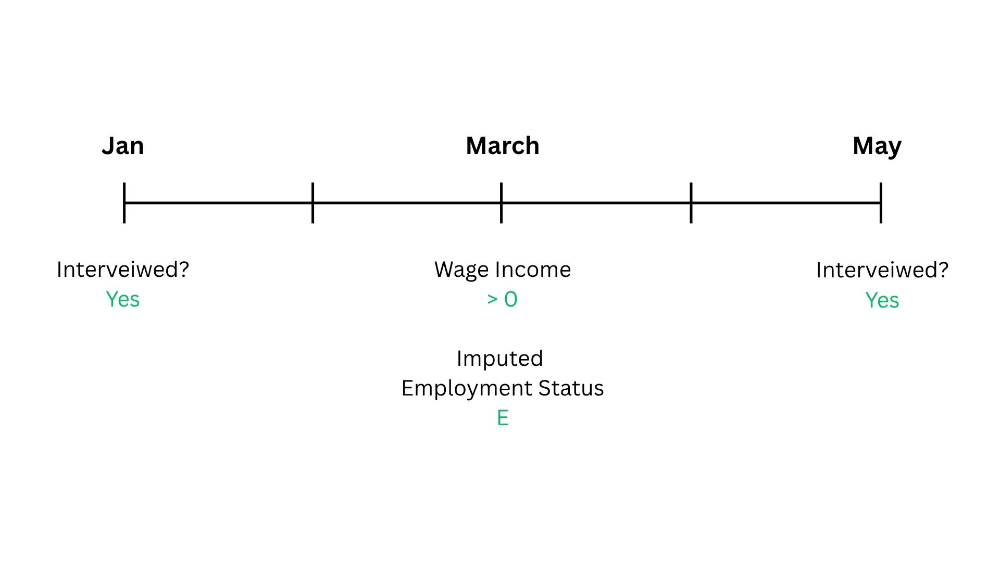
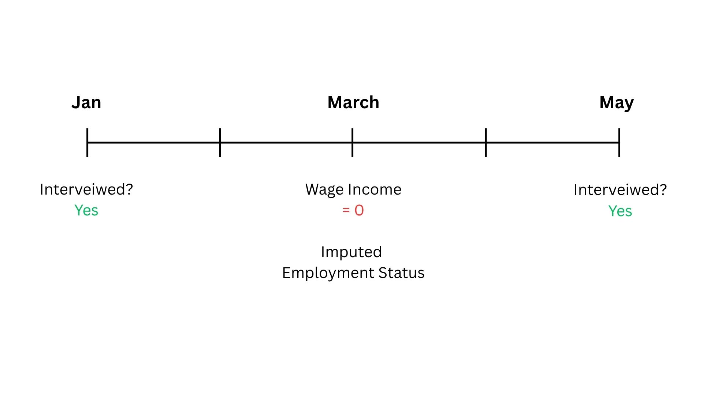
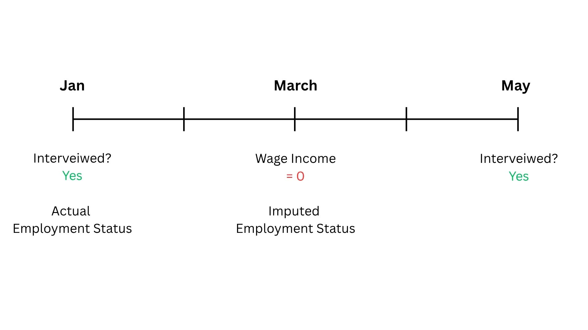
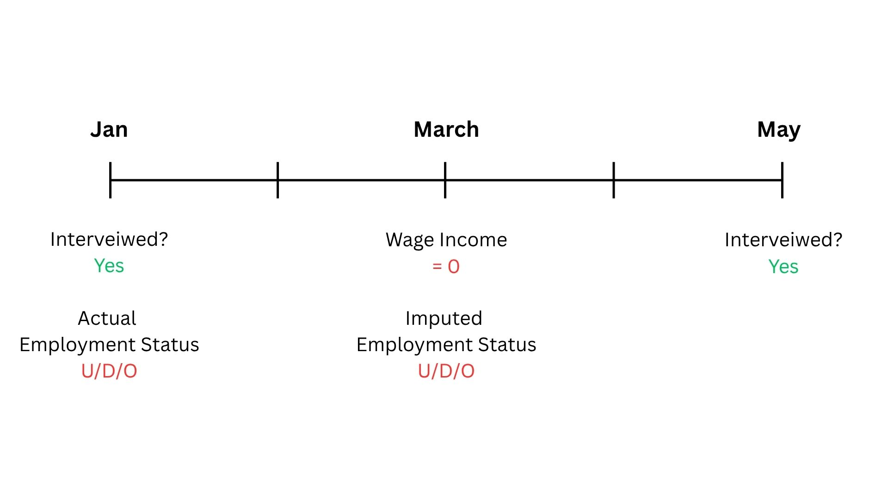
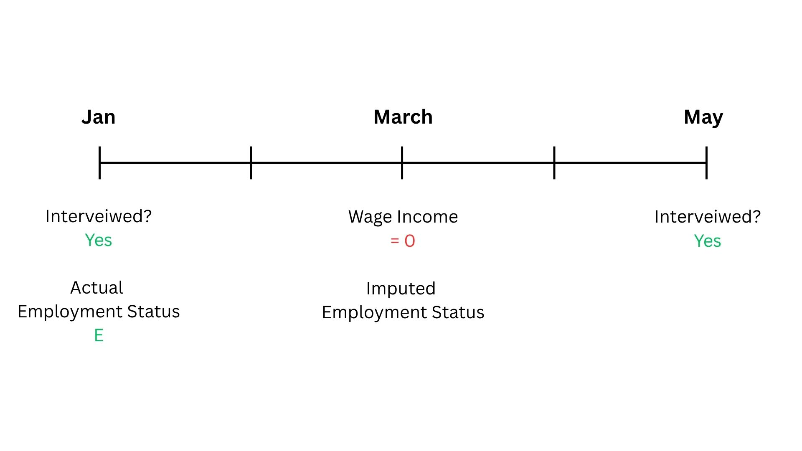
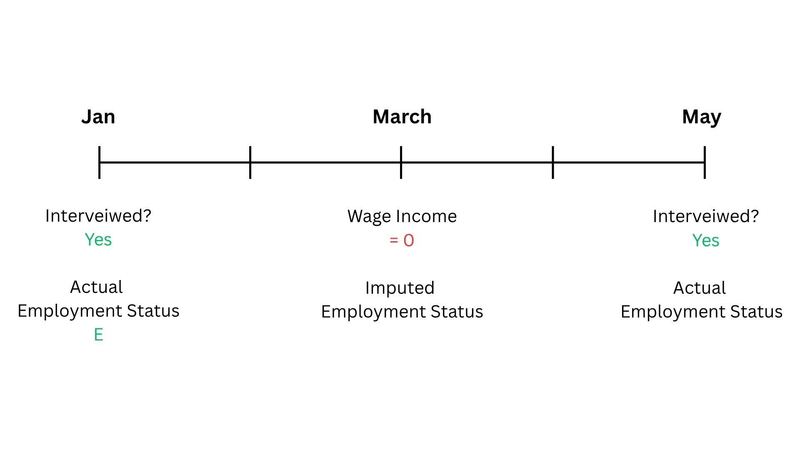
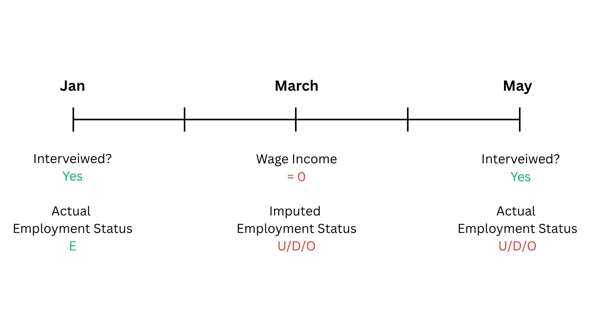
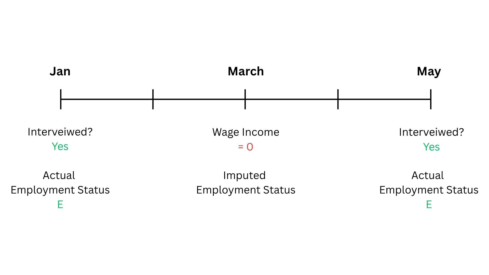
Employment status is either “Employed” or “Non-employed”.
Non-employed individuals are of interest. Failure is defined as transitioning from non-employed to employed.
Estimate the KM Estimator and Cox PH model.
Data is non-weighted.
About 10-15% of the sample has changing religion/caste for the same individual. In this case, only data from the period with initial religion/caste is retained.
Left-censored data has been excluded. Thus, we only consider individuals who lose employment within the period of observation.
\[ \begin{align} h_i(t) &= h_0(t) + \exp(\beta_1\text{Age}_i(t) + \beta_2\text{FamilyIncome}_i(t) +\\ & \qquad \beta_3 \textbf{Religion}_i + \beta_4 \textbf{Caste}_i + \\ & \qquad \beta_5 \textbf{EducationLevel}_i(t) + \\ & \qquad \beta_6 \textbf{RelationshipWithHOH}_i(t) +\beta_7 \text{Post-COVID}_i) \end{align} \]
| Covariate | Hazard Ratio |
|---|---|
| Age | 0.975*** |
| (0.0004) | |
| Family Income (₹1000s) | 1.004*** |
| (0.00003) | |
| Post-COVID | 0.787*** |
| (0.007) | |
| Religion (ref: Hindu) | |
| Muslim | 1.088*** |
| (0.014) | |
| Other | 0.662*** |
| (0.015) | |
| Caste (ref: General Caste) | |
| Not Stated | 0.982 |
| (0.037) | |
| OBC/Intermediate Caste | 1.231*** |
| (0.012) | |
| SC/ST | 1.164*** |
| (0.015) | |
| Education (ref: No Education) | |
| Primary School | 1.119*** |
| (0.040) | |
| Middle School | 1.139*** |
| (0.041) | |
| High School | 0.941* |
| (0.033) | |
| Vocational | 0.502*** |
| (0.031) | |
| Undergraduate and Higher | 0.940* |
| (0.033) | |
| Relationship with Household Head (ref: Household Head) | |
| Other | 0.495*** |
| (0.013) | |
| Son | 0.498*** |
| (0.007) | |
| Observations | 1,363,213 |
| R2 | 0.009 |
| Max. Possible R2 | 0.614 |
| Log Likelihood | −642,159.900 |
| Wald Test | 31,627.100*** (df = 15) |
| LR Test | 12,242.400*** (df = 15) |
| Score (Logrank) Test | 51,664.080*** (df = 15) |
| Note: Standard errors in parentheses. p<0.1; p<0.05; p<0.01. | |
| Covariate | Chi-square | df | p-value |
|---|---|---|---|
| Age | 327.189 | 1 | <0.001 |
| Family Income (₹1000s) | 2325.625 | 1 | <0.001 |
| Religion | 82.079 | 2 | <0.001 |
| Caste | 52.909 | 3 | <0.001 |
| Education | 172.025 | 5 | <0.001 |
| Relationship with Household Head | 234.283 | 2 | <0.001 |
| Post-COVID | 399.279 | 1 | <0.001 |
| Global Test | 3082.457 | 15 | <0.001 |
Stratification: \[ h_s(t|\mathbf{X}(t)) = h_{s0}(t) \exp (\boldsymbol{\beta}^\mathsf{T}\mathbf{X}(t)) \]
Time-varying Covariates: \[ h(t|\mathbf{X}(t)) = h_0(t) \exp (\boldsymbol{\beta}(t)^\mathsf{T}\mathbf{X}(t)) \]
Accelerated Failure Time (AFT) Models (Eg: Weibull)
Modify/replace Cox PH Model.
Weight the data.
Account for left censoring (Turnbull, Interval Censored Cox).
Investigate changing caste/religion.
Incorporate competing risks and recurrent events.
Address some economic theory.